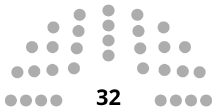

Candidat Vice-President
Bureau des Etudiants de 3iL
2026 - 2027
BDE 3iL | Limoges
Campagne BDE 3iL
Cette candidature a pour objectif de structurer un bureau solide, de renforcer la vie etudiante a 3iL et de proposer un programme concret pour les eleves ingenieurs.
🗳️ Election
La candidature au poste de Vice-President du BDE 3iL suit un cadre democratique interne avec presentation du programme devant les etudiants.
-
✓
Candidature declaree
Depot de candidature avec projet et feuille de route associative
-
✓
Presentation du programme
Mise en avant des priorites pour la vie etudiante, l'animation et les partenariats
-
✓
Vote interne
Election organisee selon les modalites prevues par le BDE
-
✓
Mandat 2026-2027
Engagement sur toute la duree du mandat associatif

BDE 3iL
Limoges
Nom de la liste : Heracles
Position dans la liste : Co-tête de liste
Resultat : A venir
Objectifs principaux
- Vie etudiante : Proposer des actions concretes pour le quotidien des etudiants
- Evenements : Structurer un calendrier annuel coherent et accessible
- Partenariats : Renforcer les liens avec les acteurs locaux et entreprises
- Communication : Ameliorer la transparence des actions du bureau
- Representation : Porter les attentes et besoins des etudiants de 3iL
Vision
Construire une dynamique collective utile et durable, au service d'une vie associative ambitieuse, inclusive et professionnalisante pour tous les etudiants de 3iL Limoges.